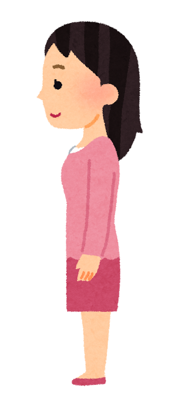

You may be thinking…
“I’m trying to follow the conversation and choose my meal. I keep noticing the pens. Looking away may help me follow the words.”
AN INTERACTIVE CONVERSATION
You are ordering at a café. Choose your meal while talking to the barista. Your task is complete only after you send your full order.
Start with visible words. Add distractions when you are ready.
01 / 04

Your gaze shifts between the menu, the pens, and the person speaking.
“I’m trying to follow the conversation and choose my meal. I keep noticing the pens. Looking away may help me follow the words.”
“That pause felt like disengagement. I thought ‘the usual one’ was reassuring.” They have not specified what “the usual one” includes.
An ambiguous question, a meal to choose, background sounds, and a recurring side task compete for attention.
Visible words, explicit instructions, time to respond, and permission to set side tasks aside. Eye contact is not required.
What did you miss or have to reread?
What pulled you away from the conversation?
Which change helped you stay involved?
This fictional activity uses visual metaphors, not harsh audio. It is not a validated simulation of autistic perception. Experiences vary; a need to align pens is not universal and does not diagnose autism or OCD. Gaze direction alone does not tell us what a person feels or understands. Nothing you enter is saved.
Background reading: National Autistic Society · Sensory processing; Milton (2012) · The double empathy problem. Illustration: いらすとや · Terms of use. The illustration depicts a person, not a diagnosis.
先說明：「你正在咖啡廳點餐。請一邊跟上店員的對話，一邊選好飲料、食物和內用或外帶。每句回覆都要按 Send reply 才會送出，最後送出完整訂單才完成任務。」先不開干擾，邀請觀眾說出第一印象，再開啟兩種干擾。
聲響文字框會暫時蓋住對話，把「普通背景聲變得難以忽略」具象化；旁邊反覆出現的排筆通知，則把注意力被另一件事拉走的感覺具象化。這是設計過的比喻，不代表每位自閉症者的真實內在經驗。可以排筆，也可以暫時不處理。
第二階段討論雙方可能如何解讀停頓、眼神與模糊問句；第三階段請觀眾選擇更明確的說法。按「Add support」後維持同一項點餐任務，關掉遮蔽與通知，再比較理解及參與是否變容易。不要把這次表現當作診斷或治療成效。
收尾問：「當我以為對方不專心時，還可能漏看了哪些負擔？我能怎麼改變溝通方式或環境？」隨時按 Esc 可清除干擾。